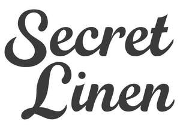

Trade Mark Journal No.2025/035 29 August 2025
UK00004248060 12 August 2025 (20,24,25)

- Class 20
- Bedding, except linen; Bedding for cots [other than bed linen]; Bedding for nursery cots [other than bed linen]; Bumper guards for cots, other than bed linen; Bumper guards for cribs, other than bed linen; Pillows; Stuffed pillows; Beds, bedding, mattresses, pillows and cushions; Throw pillows; Accent pillows; Mattress toppers; Mattress pads; Chair cushions; Pet cushions; Cushions (Pet -); Cushions (upholstery); Soft furnishings [cushions]; Cushions [furniture].
- Class 24
- Linen; Linen cloth; Bed linen and table linen; Linen [fabric]; Bed linen; Linen for the bed; Linen (Bed -); Terry linen; Woven linen fabrics; Bath linen; Kitchen linen; Mats of linen; Table linen of textile; Diapered linen; Linen (Diapered -); Bed linen and blankets; Bed linen of paper; Household linen; Linen (Household -); Table linen; Textiles made of linen; Textile napkins [table linen]; Canopies (bed linen); Linens; Textile smallwares [table linen]; Infants' bed linen; Bed linen made of non-woven textile material; Valence linen; Tick [linen]; Linen lining fabric for shoes; Fabrics made from linen, other than for insulation; Bath linen, except clothing; Cot bumpers [bed linen]; Household linen, including face towels; Towels of textile; Towels [textile]; Towels [of textile]; Cotton cloths; Coasters [table linen]; Towels of textiles; Crib bumpers [bed linen]; Table linen, not of paper; Tags of textile for attachment to linen; Labels (Textile -) for marking linen; Kitchen towels [textile]; Kitchen towels of textile; Kitchen towels of cloth; Textile fabrics for use in the manufacture of towels; Linen for household purposes; Flax cloth; Cotton fabrics; Bed blankets made of cotton; Woollen fabric; Bedsheets of leather; Labels (Textile -) for identifying linen; Cotton fabric; Silk fabrics; Woollen cloth; Woven silk fabrics; Flax fabrics; Cotton blankets; Woollen fabrics; Hand-towels made of textile fabrics; Textile tablecloths; Tablecloths of textile; Household linens; Towels [textile] for the beach; Towelling [textile]; Drink coasters of table linen; Woven fabrics for use in the manufacture of clothing for use in clean rooms; Glass cloths [towels]; Woolen cloth; Woolen fabric; Textile fabrics for making into linens; Textile goods for use as bedding; Denim [cloth]; Tablecloths of textiles; Textile fabrics for use in the manufacture of bedding; Damask; Textile fabrics for use in the manufacture of pillowcases; Cloth doilies; Textile hair drying towels; Textile face towels; Face towels of textile; Fabric bed valances; Towels made of textile materials; Towels [textile] for kitchen use; Terry towels; Towelling coverlets; Hand towels of textile; Face towels of textiles; Cotton knitted fabric; Textile fabrics for use in the manufacture of beds; Woollen fabrics for use in the manufacture of trousers; Textiles made of cotton; Quilted blankets [bedding]; Napery of textile; Napery [textile]; Textile fabrics for use in the manufacture of sheets; Cloths of woven textile material for washing the body [other than for medical use]; Quilts made of terry cloth; Curtains made of textile fabrics; Textiles made of satin; Shams (Pillow -); Pillow shams; Pillowcases [pillow slips]; Pillow covers; Pillow slips; Ticks (mattress and pillow coverings); Pillow cases; Covers for pillows; Blankets (Bed -); Bed blankets; Bed quilts; Quilt bedding mats; Sofa blankets; Mattress covers; Bed valances; Duvet covers; Quilts of towel; Futon quilts; Bed clothes and blankets; Contoured mattress covers; Valanced bed sheets; Pillowcases; Covers for eiderdown and duvets; Comforters (bedding); Bed throws; Bed coverings; Bed covers; Valanced bed covers; Cushion covers; Covers for cushions; Cushions (Covers for -); Cot blankets; Flat bed sheets; Bed sheets of plastic [not being incontinence sheets]; Bed sheets of plastic, not being incontinence sheets; Woven fabrics for cushions; Ticks [mattress covers]; Quilt covers; Covers for mattresses; Baby blankets; Mattress slips [other than incontinence]; Protective loose covers for mattresses and furniture; Comforters for beds; Bed clothes; Fitted bed sheets; Crib sheets; Bed canopies; Valances for beds; Cot sheets.
- Class 25
- Linen clothing; Linen (Body -) [garments]; Body linen [garments]; Bed socks.
The Secret Linen Store Ltd